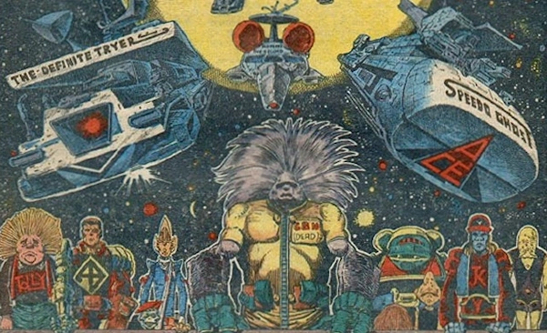

Mush rush meets B-Hive-K on line for blubbos and flanners. Clearway lugbuddies burn jekyl from disgumby to plasma jam blipping big byms. Ace Garp jocks Speedo Ghost alongside biffo GBH, powerhouse lugbuddy Feek the Freek and a blubberoni scarf.
Art by Massimo Belardinelli
| Story Title | Parts | Pages | w indicates a wraparound coverCovers | Year(s) | Issues | Writer | Artist | Colourist | Letterer |
|---|---|---|---|---|---|---|---|---|---|
| Ace Trucking Co. | 5 | 25 | 232: Massimo Belardinelli 235: Massimo Belardinelli 2 | 1981 | 232-236 | Alan Grant, John Wagner | Massimo Belardinelli | [b&w] | Peter Knight: 1 Tom Frame: 2 Steve Potter: 3‑5 various |
| Hell's Pocket | 5 | 20 | 0 | 1981 | 239-243 | Alan Grant, John Wagner | Ian Gibson | [b&w] | Tony Jacob |
| Lugjack | 7 | 35 | 244: Massimo Belardinelli 247: Massimo Belardinelli 2 | 1981-1982 | 244-250 | Alan Grant, John Wagner | Massimo Belardinelli | <-- 2pp, [b&w] | Steve Potter |
| The Great Mush Rush | 8 | 42 | 251: Massimo Belardinelli 255: Ian Gibson 258: Massimo Belardinelli 3 | 1982 | 251-258 | Alan Grant, John Wagner | Massimo Belardinelli | [b&w] | Steve Potter |
| The Ughbug Bloos | 1 | 6.5 | 0 | 1982 | 259 | Alan Grant, John Wagner | Massimo Belardinelli | [b&w] | Tony Jacob |
| Last Lug to Abbo Dabbo | 8 | 40 | 0 | 1982 | 260-267 | Alan Grant, John Wagner | Massimo Belardinelli | [b&w] | Steve Potter |
| Joobaloo | 5 | 25 | 270: Massimo Belardinelli 271: Massimo Belardinelli 2 | 1982 | 268-272 | Alan Grant, John Wagner | Massimo Belardinelli | [b&w] | Steve Potter |
| Too Many Bams | 6 | 31 | 275: Massimo Belardinelli 1 | 1982 | 273-278 | Alan Grant, John Wagner | Massimo Belardinelli | [b&w] | Steve Potter: 1‑5 Jack Potter: 6 various |
| The Kloistar Run | 7 | 35 | 282: Massimo Belardinelli 1 | 1982 | 279-285 | Alan Grant, John Wagner | Massimo Belardinelli | [b&w] | Steve Potter |
| [Bamfeezled] | 1 | 5 | 0 | 1982 | SFS5 | Alan Grant, John Wagner | Massimo Belardinelli | [b&w] | Jack Potter |
| Stoop Coop Soup | 6 | 30 | 0 | 1982 | 288-293 | Alan Grant, John Wagner | Massimo Belardinelli | [b&w] | Steve Potter |
| On the Dangle | 9 | 45 | 378: Massimo Belardinelli 383 [w]: Massimo Belardinelli 1,1w | 1984 | 378-386 | Alan Grant, John Wagner | Massimo Belardinelli | <-- 2pp, [b&w] | Steve Potter |
| Strike! | 13 | 64 | 0 | 1984-1985 | 387-390, 392-400 | Alan Grant, John Wagner | 1‑6, 9‑13: Massimo Belardinelli 7‑8: Studio Giolittivarious | [b&w] | Steve Potter: 1‑3, 10 Tony Jacob: 4‑7, 9, 11‑12, 13 Tom Frame: 8 various |
| The Croakside Trip | 6 | 31 | 430: Massimo Belardinelli 1 | 1985 | 428-433 | Alan Grant, John Wagner | Massimo Belardinelli | [b&w] | Richard Starkings |
| [Stowaway Lugjacker] | 1 | 6 | 0 | 1985 | Reprints: SFS182KA'86 | Alan Grant, John Wagner | Massimo Belardinelli | <-- | Steve Potter |
No supertitle.Whatever Happened to Ace Garp? | 1 | 3 | 0 | 1986 | 451 | Alan Grant, John Wagner | Massimo Belardinelli | [b&w] | Tony Jacob |
| The Doppelgarp | 21 | 84 | 456: Robin Smith 457: Robin Smith 465: Massimo Belardinelli 3 | 1986 | 452-472 | Alan Grant, John Wagner | Massimo Belardinelli | [b&w] | Tony Jacob |
| The Garpetbaggers | 23 | 94 | 479: Massimo Belardinelli 1 | 1986 | 475-483, 485-498 | Alan Grant, John Wagner | Massimo Belardinelli | [b&w] | Tony Jacob: 1‑3, 6‑12, 15‑23 Gordon Robson: 4, 13 A. Jacob: 5, 14 various |
From Judge Dredd Cameo from Ace Garp.Exit the Dragon | 1 | 2 | 0 | 1987 | JDA'88 | Alan Grant, John Wagner | Matthew Jones | [b&w] | Tom Frame |
| The Homecoming | 1 | 6 | 0 | 1988 | 2KA'89 | Alan Grant, John Wagner | Massimo Belardinelli | <-- | Mark King |
| Star's Truck | 1 | 8 | 0 | 2015 | SFS21 | Eddie Robson | Nick Dyer | [b&w] | Annie Parkhouse |
| The Banned Brand Stand | 1 | 5 | 0 | 2016 | SFS22 | Eddie Robson | Nigel Dobbyn | [b&w] | Ellie de Ville |
| The Festive Flip-Flop | 1 | 10 | 0 | 2016 | 2011 | Eddie Robson | Nigel Dobbyn | [b&w] | Ellie de Ville |
| Muggo's Moon | 1 | 7 | 0 | 2017 | 2061 | Eddie Robson | Nigel Dobbyn | [b&w] | Ellie de Ville |
Linked to [Trench, Alec]Untrenched | 1 | 6 | 0 | 2022 | 2312 | Karl Stock | Nick Dyer | [b&w] | Simon Bowland |
| >> Text Stories << | |||||||||
| The Gung-Ho Run | 1 | 5 | 0 | 1982 | 2KA'83 | Alan Grant | Massimo Belardinelli | [monochrome] | n/a |
| >> Posters / Teasers << | |||||||||
Star Pin‑Up.B-Hive-K | 1 | 1 | 0 | 1981 | 241 | n/a | Massimo Belardinelli | <-- | n/a |
Star Pin‑UpAce Trucking Co. | 1 | 1 | 0 | 1983 | 301 | n/a | Massimo Belardinelli | <-- | n/a |
Star Fry‑Up.Princess Gadarina | 1 | 1 | 0 | 1984 | 390 | n/a | Massimo Belardinelli | <-- | n/a |
2000AD Memorial Scan.Lest We Skidoo | 1 | 1 | 0 | 1985 | 434 | n/a | Massimo Belardinelli | [b&w] | n/a |
From 2000 AD Art‑FileAce Trucking Co. | 1 | 1 | 0 | 1989 | 658 | n/a | Massimo Belardinelli | <-- | n/a |
| Ace Trucking Co. | 1 | 1 | 0 | 2004 | p2005 | n/a | Boo Cook | <-- | n/a |
From Great Moments in Thrill‑Power. Subtitled: "[in memory of Massimo]"Ace Garp Takes the Nightlight Flight | 1 | 1 | 0 | 2007 | 1536 | n/a | Steve Roberts | <-- | n/a |
| >> Features << | |||||||||
Multi‑part supplement.A Space Truckers' Dictionary | 4 | 8 | 0 | 1981 | 232-235 | Alan Grant John Wagnervarious | Massimo Belardinelli | <-- 4pp, [b&w] | n/a |
Update.A Space Truckers' Dictionary | 1 | 0.5 | 0 | 1982 | 259 | Alan Grant John Wagnervarious | Massimo Belardinelli | [b&w] | n/a |
New Edition.Space Truckers' Dictionary | 2 | 3 | 0 | 1982 | 275-276 | Alan Grant John Wagnervarious | Massimo Belardinelli | [b&w] | n/a |
From Features | Art FeaturesMega-Stars in the Making | 1 | 4 | 0 | 1982 | 2KA'83 | editorial | repro & dev. images | [b&w] | n/a |
Subtitled: "Unofficial Space Truckers' Quiz".Are You a Jockbox Genius? | 1 | 2 | 0 | 1982 | 2KA'83 | Ace Garp | Massimo Belardinelli | [b&w] | n/a |
Abridged.Space Truckers' Dictionary | 1 | 1 | 0 | 1982 | 2KA'83 | Alan Grant John Wagnervarious | Massimo Belardinelli | [monochrome] | n/a |
Data‑File.Ace Trucking Co. | 1 | 3 | 0 | 1983 | 2KA'84 | editorial | Massimo Belardinelli | [b&w] | n/a |
Abridged.Space Truckers' Dictionary | 1 | 1 | 0 | 1984 | 377 | Alan Grant John Wagnervarious | Massimo Belardinelli | [b&w] | n/a |
Data‑File.Ace Trucking Co. | 1 | 1 | 0 | 2004 | p2005 | editorial | n/a | n/a | n/a |
| year | episodes | pages |
| 1979 | 0 | 0 |
| 1980 | 0 | 0 |
| 1981 | 11 | 50 |
| 1982 | 48 | 244.5 |
| 1983 | 0 | 0 |
| 1984 | 20 | 99 |
| 1985 | 9 | 47 |
| 1986 | 45 | 181 |
| 1987 | 1 | 2 |
| 1988 | 1 | 6 |
| 1989 | 0 | 0 |
| 1990 | 0 | 0 |
| 1991 | 0 | 0 |
| 1992 | 0 | 0 |
| 1993 | 0 | 0 |
| 1994 | 0 | 0 |
| 1995 | 0 | 0 |
| 1996 | 0 | 0 |
| 1997 | 0 | 0 |
| 1998 | 0 | 0 |
| 1999 | 0 | 0 |
| 2000 | 0 | 0 |
| 2001 | 0 | 0 |
| 2002 | 0 | 0 |
| 2003 | 0 | 0 |
| 2004 | 0 | 0 |
| 2005 | 0 | 0 |
| 2006 | 0 | 0 |
| 2007 | 0 | 0 |
| 2008 | 0 | 0 |
| 2009 | 0 | 0 |
| 2010 | 0 | 0 |
| 2011 | 0 | 0 |
| 2012 | 0 | 0 |
| 2013 | 0 | 0 |
| 2014 | 0 | 0 |
| 2015 | 1 | 8 |
| 2016 | 2 | 15 |
| 2017 | 1 | 7 |
| 2018 | 0 | 0 |
| 2019 | 0 | 0 |
| 2020 | 0 | 0 |
| 2021 | 0 | 0 |
| 2022 | 1 | 6 |
| 2023 | 0 | 0 |
| 2024 | 0 | 0 |
Comic strip data (excludes other content):